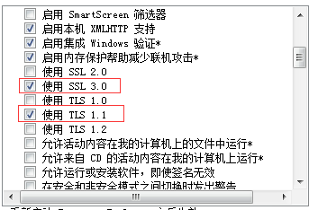

客户反馈解决方法
1.http下打印图片正常，https下打印图片是××。（有的客户端可以，有的不可以）重置ie浏览器试试。
客户反馈：（和ie浏览器的设置有关）
intenet选项--高级里，我调整为和能打印出图片的电脑一样的配置，就可以打印了，但是不知道具体是哪项影响的
2.打印https的url内容，预览显示证书错误页面，个别电脑出问题
Lodop是基于本机windows底层引擎进行渲染解析的，与ie调用的引擎一致。在样式有问题所在电脑上，尝试重置ie，升级ie，
修改问题电脑的IE设置
客户反馈：

ie8，不支持https，要修改internet选项
3.使用的是斑马打印机，中文汉字无法打印，excel可以打印出汉字。（客户反馈）
针对斑马打印机如果需要用我们控件打印汉字，需要设置字体，不然没有办法打印汉字。
有客户反映，斑马打印机如果要用控件打印汉字，需要设置字体，不然没法打印汉字。
可尝试设置一下字体，例如设置为宋体，试试能否打印出汉字。
4.连续打印多任务，打印机不连续，多页可以连续
1.打印机需要打到连续打印模式，之前没有接触过针式打印机，下午调试时用的一直都是单页模式；
2.换了一种实现方式，采用了 LODOP.NEWPAGEA(); 没在继续在样例五的连续打印 方法上继续坚持。(客户反馈)
多个打印任务打印不连续，之前有客户反馈打印机有单页模式和连续打印模式，咨询下打印机客服，排查是否和打印机模式有关。
或用一个任务多页的方式测试下。
5.用虚拟打印机测试，虚拟打印机怎么也不弹出保存框
虚拟打印机不弹出的问题解决了，是360安全卫士把spool drivers里的核心dll文件阻止了(客户反馈）
6.不管怎么样，总是提示窗口已打开
查询默认打印机是否有效或出错，指定其他打印机试试。
找到原因了，默认打印机出错了。（客户反馈）
7.打印机打出来的文字是反的
用xps或pdf虚拟打印机测试下。
虚拟打印机正常，可能和打印机设置有关，排查相关打印机设置，是否勾选了打印机的镜像打印。(客户反馈）
客户反馈：无意勾选到了打印机镜像打印
8.打印结果：该打印机在“云服务器工作模式”下被禁用！
后两种角色禁用虚拟打印机，排查指定打印机是否正常
客户反馈：
已经解决了
选打印机的时候弄错了。
应该是LODOP.SET_BRIDGE_INDEX
把BRIDGE 写成了PRINT
9.开启vpn代理，本地角色https证书访问不了
证书所需要的都需要加入白名单
对下列字符开头的地址不使用代理服务器

10.c-lodop安装界面乱码且注册无效
参考排查一下http://www.c-lodop.com/faq/ph01.html
或用360修复下软件乱码试试。
或百度下网上软件乱码的方法。
如果360软件乱码修复不行，试试网上的这个方法
https://jingyan.baidu.com/article/64d05a021231a3de55f73b8b.html?qq-pf-to=pcqq.c2c
之前有客户用该方法解决过
乱码相关：c-lodop安装界面乱码且注册无效【cnblog】
花谢悦神的cnblog：Lodop简短问答客户反馈篇 及排查步骤 及注册相关【cnblog】、